Путь боли
РУС
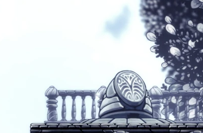
Саундтрек локации:
Hollow Knight - Sealed Vessel - Path of Pain
Путь боли — тяжелейшее испытание в игре, даже по сравнению с самим Белым дворцом подлокация разительно отличается от него по сложности. Комнаты большие, при этом преодолевать их надо за один раз (платформы для передышек находятся только между ними), однако встречаются уникальные тотемы Душ, выполненные в виде Полого рыцаря и содержащие внутри неисчерпаемое количество Душ, что позволяет восстановить потраченное здоровье до максимума.
Дополнительно:
Путь боли - локация, добавленная в Hollow Knight в DLC Grimm Troupe.
Как найти?
Путь боли можно найти в Белом дворце, куда можно попасть, используя Гвоздь грёз на трупе Каролинга на территории дворца в Древнем котловане. В начале одной из комнат Белого дворца находится стена, ничем не отличающаяся от остальных. Удары по ней, однако, откроют тайный проход, при этом сама стена разрушена не будет, как это бывает обычно. Запрыгнув в созданный пролом и пройдя далее, персонаж окажется на Пути боли.
Что дают за прохождение?
В конце Пути боли Рыцарь должен сразиться с двумя Каролингами (что создаёт определённые трудности застигнутому врасплох игроку), после чего герою открывается проход в следующую комнату, где расположился молодой Полый рыцарь, а также сам Бледный Король. Парочка смотрит вдаль, потом переглядывается, после чего растворится в воздухе, а персонаж переносится обратно в то место, где был найден проход на Путь боли, после этого вход в локацию будет закрыт навсегда. В журнале Охотника появится запись о Печати единения. По всей видимости, сцена в конце Пути боли — это то, что Бледный Король так хотел скрыть от попавших в его Грёзы странников, если таковые будут. Хоть Белая леди и упоминает об изъяне Полого рыцаря[1]Белая леди: «Умоляю тебя, захвати Сосуд. Полагаться на его силу было ошибкой. Мысль, в нём затаившаяся, погубила его»., сцена с Королём и его потомком показывает, когда именно мнимая идеальность Чистого Сосуда дала трещину и предопределила гибель Халлоунеста.
Содержание:
Гайд по прохождению
Сразу хочется отметить кое-что важное - Амулеты, которые стоит надеть для прохождения. Таковыми являются:
 «Быстрый удар - позволяет чаще наносить удары гвоздём.» Данный амулет нам понадобится для того, чтобы быстрее отскакивать от пил.
«Быстрый удар - позволяет чаще наносить удары гвоздём.» Данный амулет нам понадобится для того, чтобы быстрее отскакивать от пил. «Кровь улья - постепенно залечивает раны носителя, позволяя восстановить здоровье без фокуса ДУШИ.» Он нам понадобится для заживления ран без использования души, так как новички часто будут попадать на пилы, мух, колючки и копья.
«Кровь улья - постепенно залечивает раны носителя, позволяя восстановить здоровье без фокуса ДУШИ.» Он нам понадобится для заживления ран без использования души, так как новички часто будут попадать на пилы, мух, колючки и копья. «Пронизывающая тень - при использовании Рывка с тенью тело носителя будет причинять урон врагам.» ...а также увеличивает дальность Рывка с тенью. Необязательный амулет. Он нам позволит иногда делать более длинные рывки, преодолевая большее расстояние, чем обычно.
«Пронизывающая тень - при использовании Рывка с тенью тело носителя будет причинять урон врагам.» ...а также увеличивает дальность Рывка с тенью. Необязательный амулет. Он нам позволит иногда делать более длинные рывки, преодолевая большее расстояние, чем обычно. «Ловкач - повышает скорость бега носителя, позволяя ему легче уходить от проблем и обгонять соперников.» Ещё один необязательный амулет. Он нам позволит передвигаться чуть быстрее.
«Ловкач - повышает скорость бега носителя, позволяя ему легче уходить от проблем и обгонять соперников.» Ещё один необязательный амулет. Он нам позволит передвигаться чуть быстрее.
По сути  Быстрого удара нам будет достаточно, но остальные амулеты из списка немного упростят наш геймплей.
Быстрого удара нам будет достаточно, но остальные амулеты из списка немного упростят наш геймплей.
Но есть и такие амулеты, которые не стоит использовать:
 «Щит грёз - создаёт щит, который следует за носителем и пытается его уберечь.» Данный амулет не стоит надевать, так как создаваемый щит имеет способность наносить урон противникам, следовательно - он будет наносить урон мухам, которые нужны для отталкивания.
«Щит грёз - создаёт щит, который следует за носителем и пытается его уберечь.» Данный амулет не стоит надевать, так как создаваемый щит имеет способность наносить урон противникам, следовательно - он будет наносить урон мухам, которые нужны для отталкивания.- Все амулеты на призыв помощников:
 Песнь Ткача,
Песнь Ткача,  Мрачное дитя любой стадии,
Мрачное дитя любой стадии,  Тремогнездо,
Тремогнездо,  Пылающее чрево.
Пылающее чрево. - Все амулеты на увеличение дистанции удара гвоздя:
 Длинный гвоздь,
Длинный гвоздь,  Метка гордости.
Метка гордости.
Первый этап
Казалось бы - по закону жанра первая локация обычно должна быть легче последующих. Но нет! Она, по сравнению с Вторым этапом, сложнее из-за узкости комнат.
Сразу хочется отметить - если сделать Кристальный рывок влево, то можно попасть к статуе с Душой. Но будьте аккуратны - вместо обычной стены там колючки, которые у вас отнимут одну маску.
- От камня с текстом прыгайте вверх, цепляясь за стенки и, для дальнешего продвижения, используйте двойной прыжок. На третьей стенке находится пила. Прыжка влево и второго прыжка вверх будет достаточно, чтобы попасть на верхнюю часть стенки (над пилой). Если не хватит расстояния до стенки, то можете использовать рывок вправо для большей уверенности.
- Вдоль следующей, четвёртой стенки, движется пила сверху вниз и обратно. Для удобства имеется небольшая стенка левее от четвёртой - на неё можно прыгнуть, отскочив от четвёртой. Когда вы доберётесь до неё, то выжидайте момент, чтобы отскочить уже от неё обратно к четвёртой. Добирайтесь до самого верха стенки как можно скорее
- Оскакивайте от четвёртой стенки прыжком и делайте рывок влево. Зажав кнопку вниз - бейте, чтобы отскочить от мухи. Добираясь до пятой стенки по счёту на правой стороне локации не используйте рывки, достаточно двойных прыжков.
- Добравшись до пятой стенки делайте прыжок и рывок влево и так же отталкивайтесь от мухи, делая повторный рывок влево. К моменту, когда вы упадёте к следующей мухи, теневой рывок восстановится, что позволит сделать более удобный, дальний рывок до следующей мухи. Далее аккуратно добирайтесь до второй Левой стенки.
- Дальше на этом этапе мух не будет, но будут пилы. Спускайтесь вниз, ждите, пока перемещающаяся пила начнёт опускаться вниз, после чего прыгайте на правую стенку. Ждите, пока та пила поднимется вверх и прыгайте влево. Держась на левой стенке прыгайте вниз и сразу же готовьтесь отскакивать от пил аналогично мухам. Но у мух есть задержка между восстановлением, а об пилы можно отталкиваться без задержек.
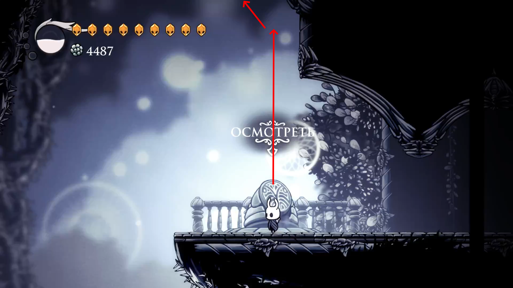
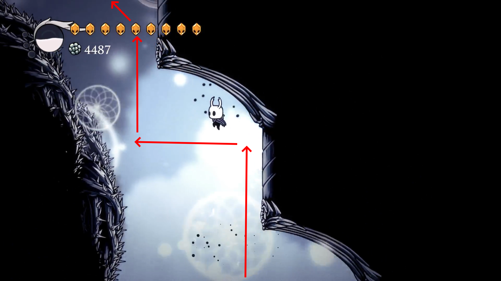
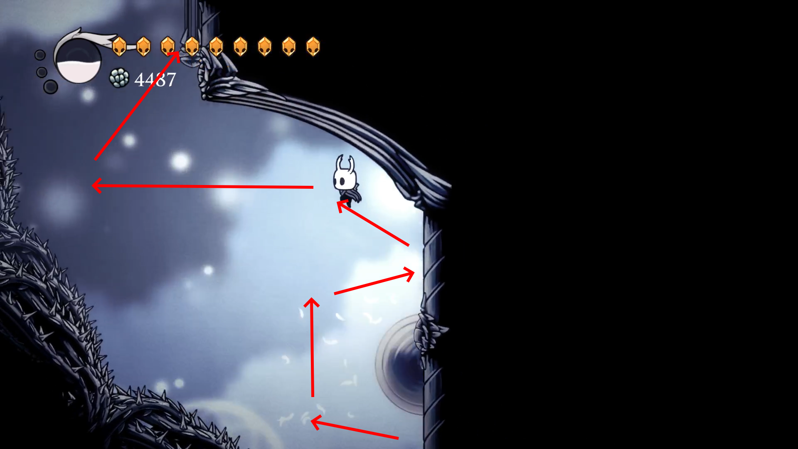
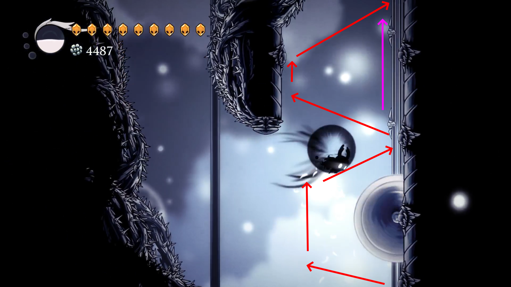
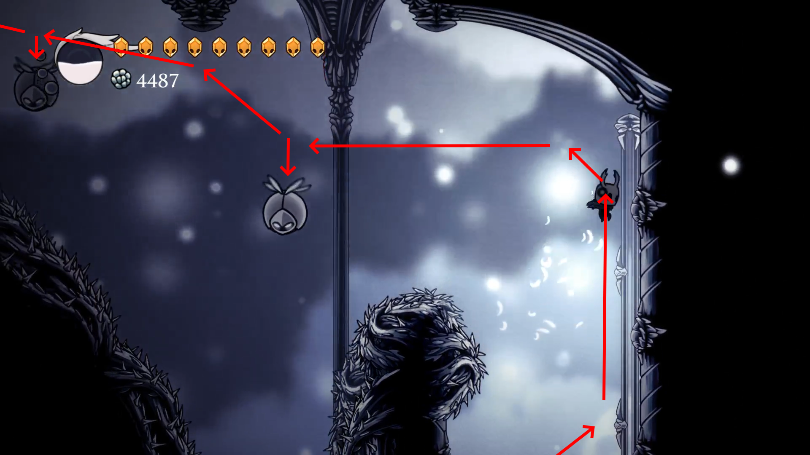
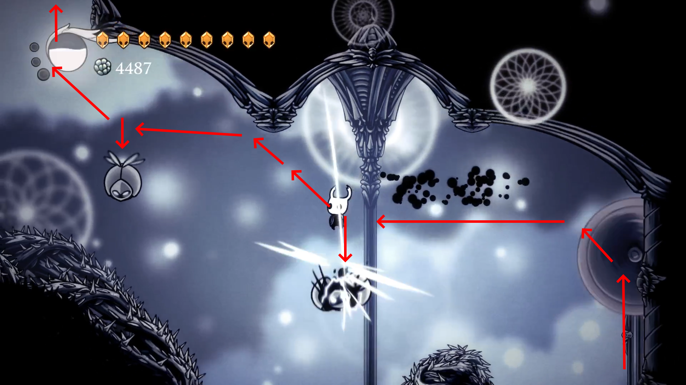
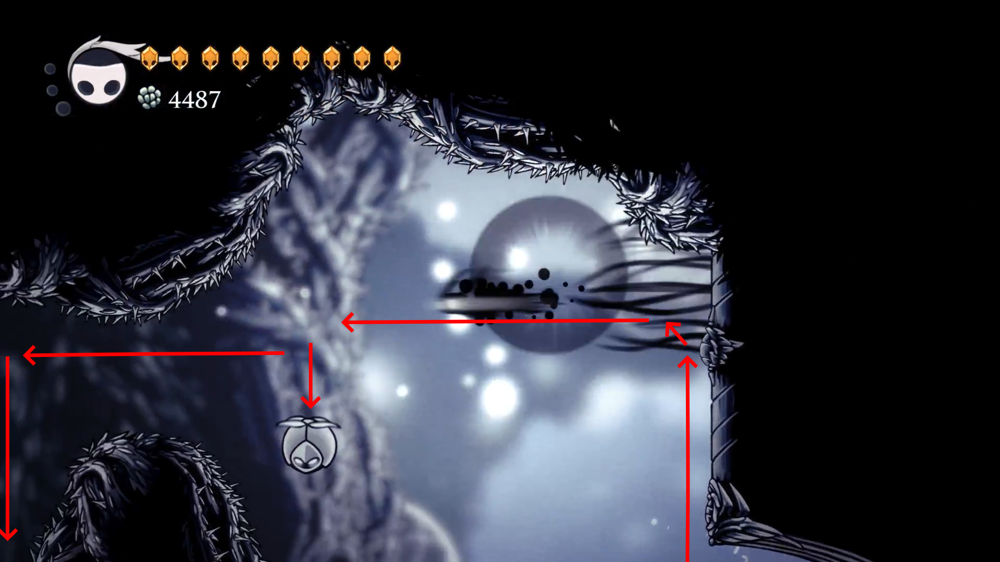
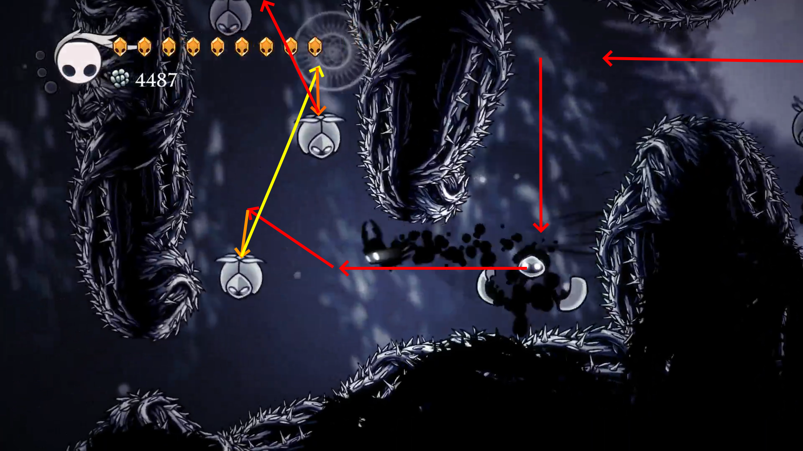
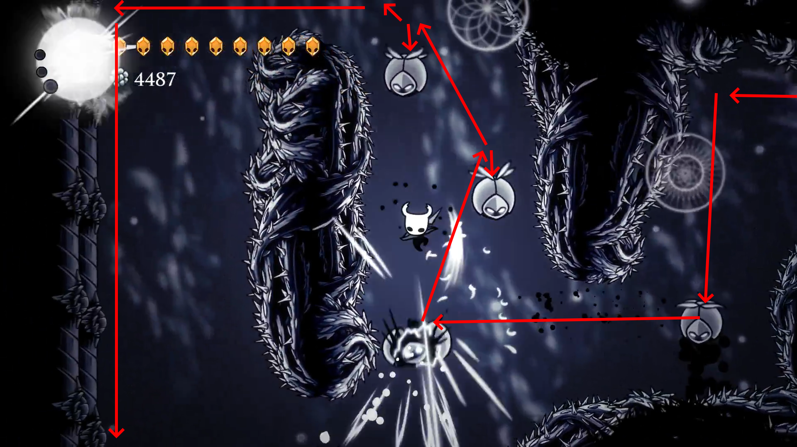
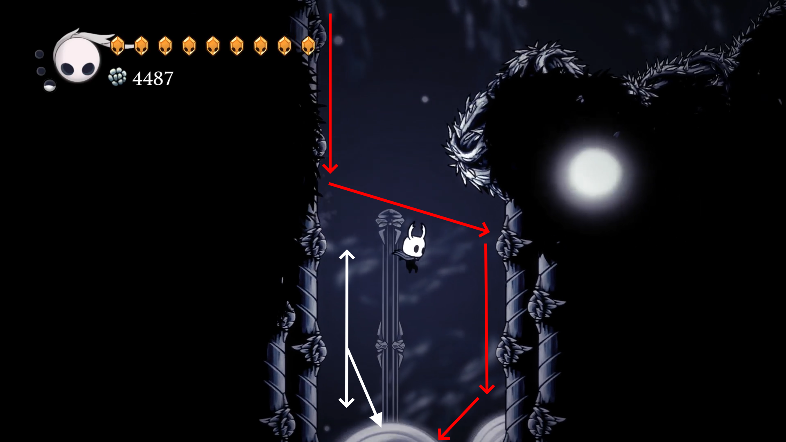
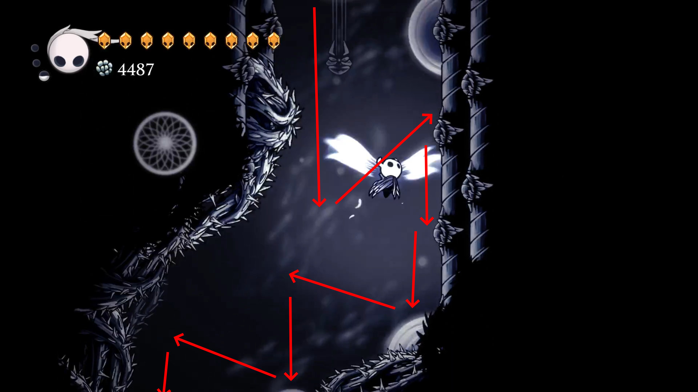
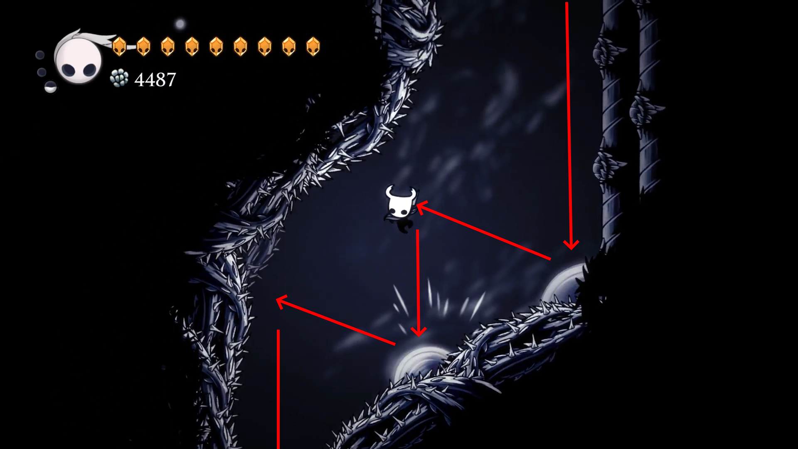
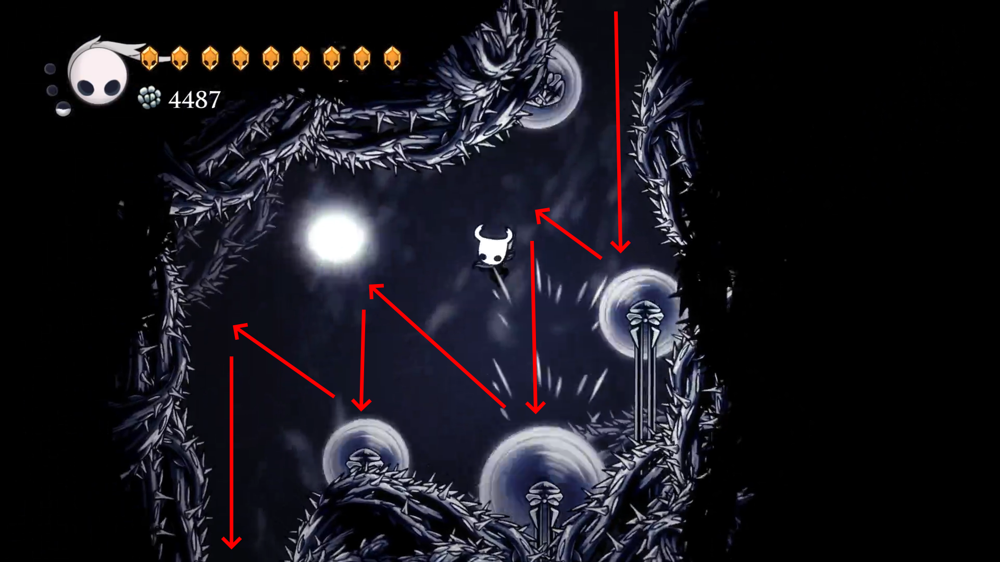
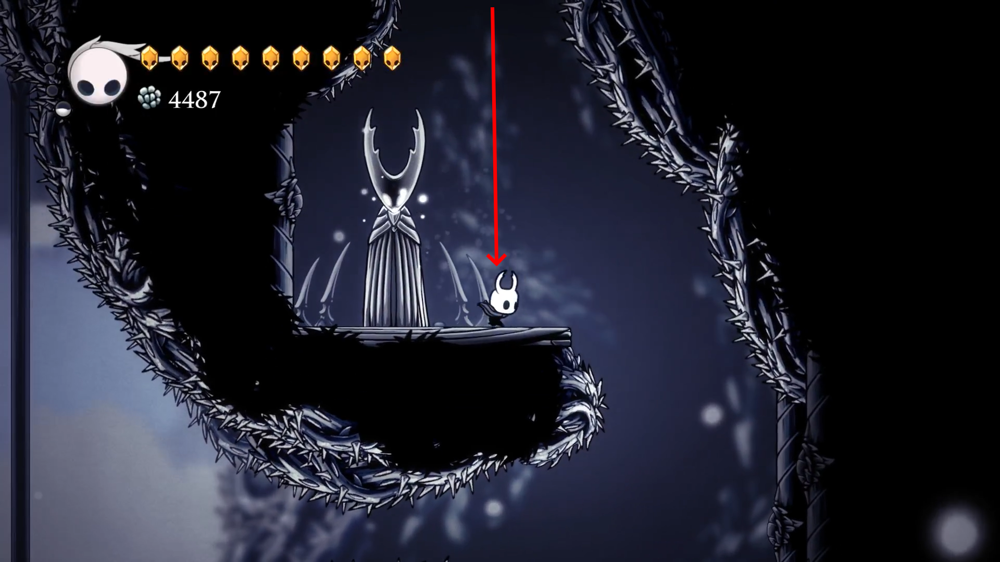
Второй этап
На втором этапе легче - он короче. Пил нету, но есть много мух.
- Прыгайте вправо на стенку и, быстро много раз зажимайте S, чтобы более точно подобрать высоту для Кристального рывка. Как только вы подберёте высоту - делайте Кристальный рывок. Попав на стенку прыгайте влево, используя обычный Рывок и Двойные прыжки.
- Прыжок -> Второй прыжок влево -> Рывок -> Удар вниз и сразу двойной прыжок влево с задержкой.Таким образом добирайтесь до самого конца.
- В следующей комнате самый обычный паркур. Прыгайте вверх не попадая на колючки.
Третий этап
Третий этап состоит из целых трёх частей, и все они с пилами.
Первая часть
- Бегите влево.
Вторая часть
Третья часть
Четвёртый этап
Первая часть
Вторая часть
Пятый этап
Финальный этап
Видео-гайд
Галерея
Локации Халлоунеста
Белый дворец → Путь боли | Божий кров | Воющие утёсы | Глубинное гнездо | Город слёз | Грёзы | Грибные пустоши
Грязьмут | Древний котлован | Забытое перепутье | Зелёная тропа | Земли упокоения | Колизей глупцов
Королевские стоки | Край королевства | Кристальный пик | Сады Королевы | Туманный каньон | Улей
Поддерживаемые языки: Русский | English